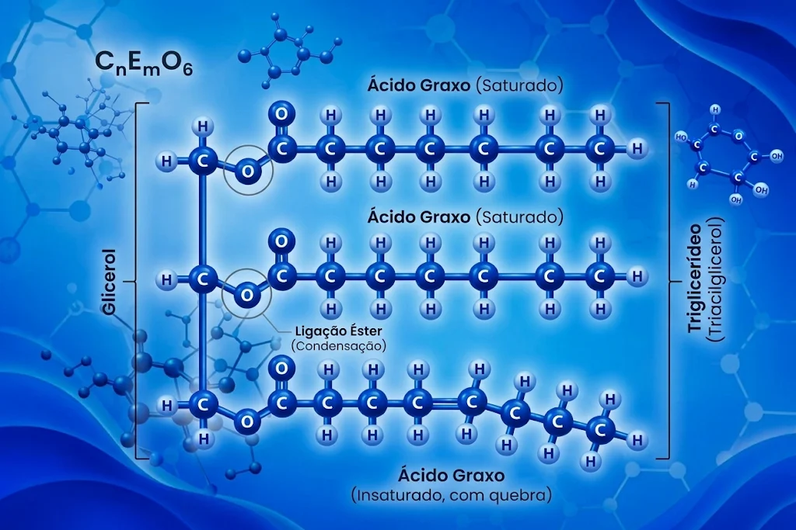
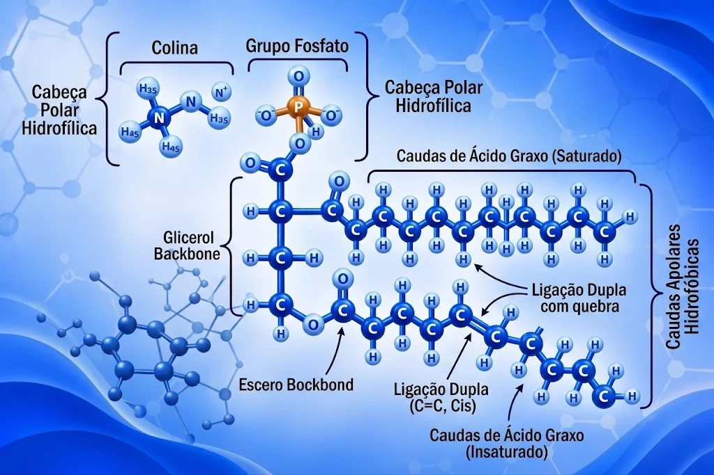
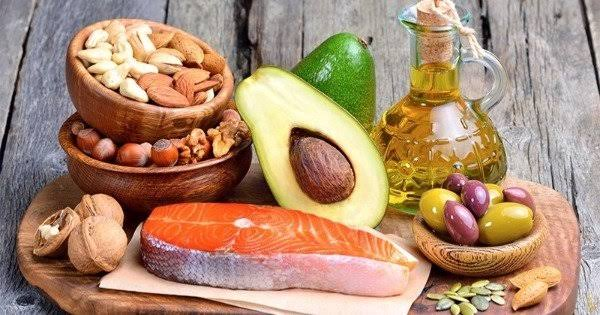

Lipídios
Compostos orgânicos caracterizados principalmente por sua insolubilidade em água (hidrofobicidade) e alta solubilidade em solventes orgânicos.
Exemplos e Funções
Os Triglicerídeos atuam como reserva de energia de longo prazo e isolamento térmico. Os Fosfolipídios constituem a estrutura básica da membrana plasmática das células.
Relação com Alimentação e Saúde
O consumo moderado de lipídios insaturados (encontrados em óleos vegetais e peixes) auxilia no bom funcionamento do sistema cardiovascular.
Exemplo do Cotidiano
O azeite de oliva utilizado no preparo de saladas e o tecido adiposo garantindo proteção mecânica e térmica ao corpo.
Triglicerídeos

Principais reservas energéticas de animais e vegetais formadas por glicerol e ácidos graxos.
Fosfolipídios

Moléculas anfipáticas essenciais que compõem a bicamada das membranas celulares.
Esteroides
Lipídios de estrutura cíclica complexa, tendo o colesterol como base para hormônios sexuais.
Lipídios no cotidiano

Abacate, castanhas, azeite e peixes são exemplos de alimentos que contêm lipídios.
Você Sabia?
Os lipídios formam uma bicamada fluida que envolve cada célula viva, atuando como um "porteiro seletivo" para garantir o transporte de nutrientes essenciais.
Fonte: Bioquímica Ilustrada (2026)